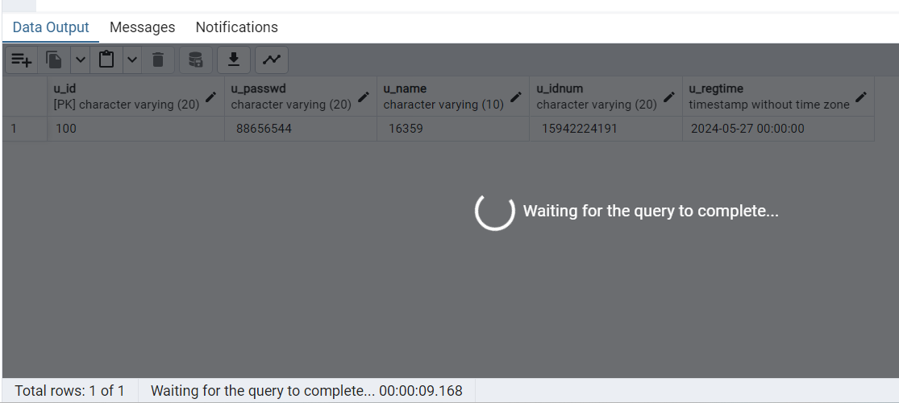
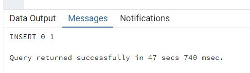
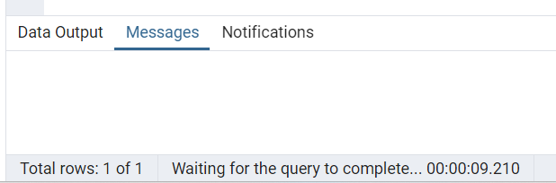
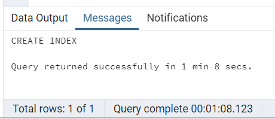
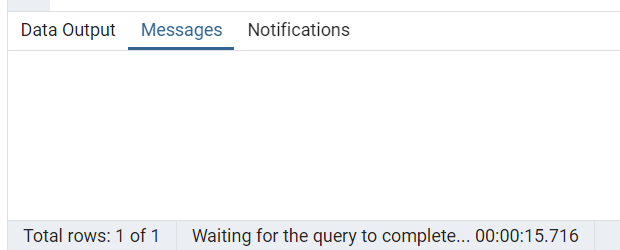

本次实验由于华为云服务器欠费，没有使用openGauss数据库，而使用的是自己电脑的postgresql
一、实验介绍
与日志和恢复机制相同，并发控制与锁机制是 openGauss 数据库实现事务处理 ACID 特性的另一重要部分。目前数据库原理教学中对于并发控制与锁机制模块缺乏行之有效的实践教学手段，部分原因归咎于并发控制与锁机制在数据库管理系统中涉及到的相关代码复杂繁复。本实验旨在借助 openGauss 的开源代码，一方面对于并发控制与锁机制的原理进行落地的代码工程实践，另一方面最大限度地减小源代码繁复程度的影响。本章实验原理主要包括 openGauss 的事务处理和锁机制。首先，通过实验查看 openGauss 数据库中表上的加锁信息；然后，通过复现的方式分别验证 Share 锁、Access Share 锁、Row Exclusive 锁和 Access Exclusive 锁。
并发控制与锁机制也是数据库管理系统实现中最为复杂和精妙部分之一。与日志和恢复部分类似，会涉及到若干系统层面的实现代码。希望通过本实验的实践内容，提升对于并发控制与锁机制的理解程度，更好地认识系统软件在工程实现方面的复杂性。
二、实验目的
理解 openGauss 事务处理原理。
了解 openGauss 事务处理模块的实现机制。
理解 openGauss 锁机制原理。
了解 openGauss 锁机制的若干实现过程。
掌握 openGauss 中 Share 锁的复现方法。
掌握 openGauss 中 Access Share 锁的复现方法。
掌握 openGauss 中 Row Exclusive 锁的复现方法。
掌握 openGauss 中 Access Exclusive 锁的复现方法。
了解与本实验相关的函数与结构体的源代码。
三、实验步骤和结果
（一）查看锁信息
1.创建表
1 | CREATE TABLE users |
2.插入一些随机数据（postgresql版）
1 | INSERT INTO users VALUES ( |
3.首先通过 SELECT pg_backend_pid();命令，我们可以查看当前会话的会话 id，实验结果如下；
1 | SELECT pg_backend_pid( ); |
4.再从系统表中查找到当前会话所添加的锁
1 | SELECT locktype,database,relation,pid,mode FROM pg_locks WHERE pid= 27384; |
5.接下来找到我们所创建的表 users 的 relation id。
1 | SELECT oid FROM pg_class WHERE relname='users'; |
Users表对应的id为16736
（二）复现Share锁
1.生成事务，添加 Share 锁。
1 | BEGIN; |
2.进行 INSERT 操作
1 | INSERT INTO users VALUES ('1234','1234','asdzxc','1234','2000-04-20'); |
打开另一个会话窗口，进行 INSERT 操作，发现该命令被堵塞，无法执行完成。如下：
打开另一个会话窗口，进行 SELECT 操作，执行结果如下：
1 | SELECT * FROM users WHERE u_id='100'; |
4.提交事务，释放 Share 锁
1 | COMMIT; |
第二个会话INSERT操作执行成功
（三）复现Access Share锁
1.生成锁
1 | BEGIN; |
2.进行 SELECT 操作
打开另一个会话窗口，进行 SELECT 操作，顺利执行完成。执行结果如下
1 | SELECT * FROM users WHERE u_id = '120'; |

3.进行 ALTER 操作
打开另一个会话窗口，进行 ALTER 操作，发现该命令被堵塞，无法执行完成。
1 | ALTER TABLE users ADD COLUMN address varchar(10); |
执行结果如下：
4.提交事务，释放锁
在第一个会话中提交事务，发现第三个会话中的 ALTER 成功执行。执行结果如下
1 | COMMIT; |
（四）复现Row Exclusive锁
1.生成锁
1 | BEGIN; |
2.此时打开另一个会话窗口，进行 CREATE INDEX 操作，发现该命令被堵塞，无法执行完成。执行结果如下：
1 | CREATE INDEX idx_name ON users(u_name); |
3.再在第一个会话中提交事务，发现第二个会话中的 CREATE INDEX 操作成功执行。第二个会话执行结果如下：
（五）复现 Access Exclusive 锁
1.生成锁执行结果如下
1 | BEGIN; |
2.此时打开另一个会话窗口，进行 SELECT 操作，发现该命令被堵塞，无法执行完成
1 | SELECT * FROM users; |
执行结果如下
3.再在第一个会话中提交事务，发现第二个会话中的 SELECT 操作成功执行。
1 | COMMIT; |
提交第一个会话执行结果如下：

（六）添加代码：输出获取与释放锁的信息
由于华为云欠费，本部分暂未完成